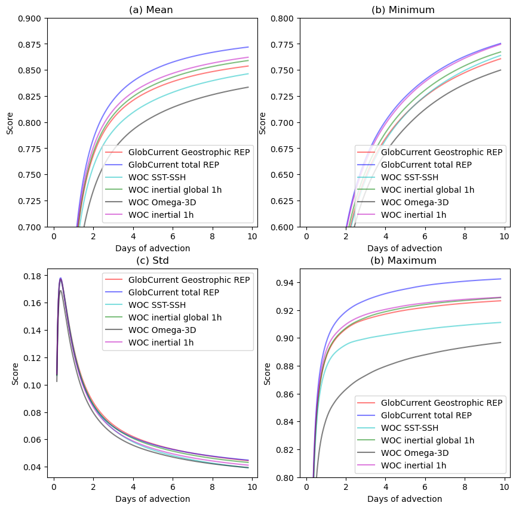
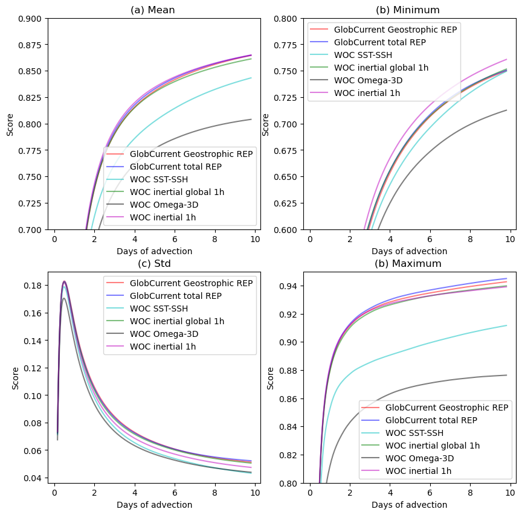

Product comparison#
Gulf Stream results
Compared products #
- GlobCurrent Geostrophic
- GlobCurrent Total
- WOC SST-SSH
- WOC inertial global
- WOC Omega-3D
- WOC inertial (North Atlantic)
<Figure size 640x480 with 0 Axes>
<Figure size 640x480 with 0 Axes>
<Figure size 640x480 with 0 Axes>
<Figure size 640x480 with 0 Axes>
<Figure size 640x480 with 0 Axes>
1. Spectrum #
At 0m

At 15m

2. Eulerian RMS #
At 0m
Mean error
| Mean | Norm Quadratic Error (%) | Norm Explained Variance (%) | Norm Correlation | Norm RMSD | Number of Points |
| GlobCurrent Geostrophic | 40.177 | 83.118 | 0.781 | 0.287 | 102578.000 |
| GlobCurrent Total | 36.575 | 84.961 | 0.813 | 0.262 | 103022.000 |
| WOC SST-SSH | 43.479 | 81.145 | 0.750 | 0.312 | 93656.000 |
| WOC inertial global 1h | 40.345 | 81.361 | 0.776 | 0.289 | 103008.000 |
| WOC Omega-3D | 42.604 | 79.880 | 0.757 | 0.306 | 93656.000 |
| WOC inertial 1h | 41.659 | 76.780 | 0.773 | 0.299 | 103274.000 |
Standard deviation error
| STD | Direction difference | Number of Points |
| GlobCurrent Geostrophic | 42.983 | 102578.000 |
| GlobCurrent Total | 42.638 | 103022.000 |
| WOC SST-SSH | 44.358 | 93656.000 |
| WOC inertial global 1h | 42.984 | 103008.000 |
| WOC Omega-3D | 44.510 | 93656.000 |
| WOC inertial 1h | 43.075 | 103274.000 |
At 15m
Mean error
| Mean | Norm Quadratic Error (%) | Norm Explained Variance (%) | Norm Correlation | Norm RMSD | Number of Points |
| GlobCurrent Geostrophic | 52.787 | 90.749 | 0.630 | 0.266 | 49819.000 |
| GlobCurrent Total | 51.551 | 89.859 | 0.639 | 0.260 | 50016.000 |
| WOC SST-SSH | 57.433 | 88.037 | 0.571 | 0.286 | 43880.000 |
| WOC inertial global 1h | 52.508 | 88.759 | 0.619 | 0.265 | 50016.000 |
| WOC Omega-3D | 57.558 | 81.021 | 0.558 | 0.287 | 43880.000 |
| WOC inertial 1h | 52.616 | 84.120 | 0.619 | 0.268 | 50176.000 |
Standard deviation error
| STD | Direction difference | Number of Points |
| GlobCurrent Geostrophic | 42.956 | 49819.000 |
| GlobCurrent Total | 42.721 | 50016.000 |
| WOC SST-SSH | 43.550 | 43880.000 |
| WOC inertial global 1h | 43.052 | 50016.000 |
| WOC Omega-3D | 43.676 | 43880.000 |
| WOC inertial 1h | 43.020 | 50176.000 |
3. Lagrangian Cumulative Distance#
At 0m
<Figure size 640x480 with 0 Axes>

At 15m
<Figure size 640x480 with 0 Axes>
